Introduction
This tutorial explains how to flexibly visualize MID models built with the midr package using the ggplot2 ecosystem.
Since the ggmid() function returns a ggplot object, you
can easily combine plots using patchwork or add
advanced customizations via geom_*() functions. Through
this article, we will explore step-by-step how to create rich figures
suitable for papers and reports, starting from the default plots.
Single MID Model
First, let’s look at basic visualizations using a single MID model.
Here, we use the built-in diamonds dataset to build a model
that predicts the diamond’s price.
# fit a MID model
mid <- interpret(
log(price) ~ (carat + cut + color + clarity) ^ 2,
k = 5L, # number of basis functions
lump = "auto", # lump factor levels
data = diamonds,
verbosity = 0L
)
diamonds_sample <- diamonds[sample(nrow(diamonds), 1000L), ]
mid$call$data <- quote(diamonds_sample)First-Order Effect (Numeric Variable)
To examine the effect of a continuous variable, specify the variable
name in the term argument.
p1 <- ggmid(mid, term = "carat")
p1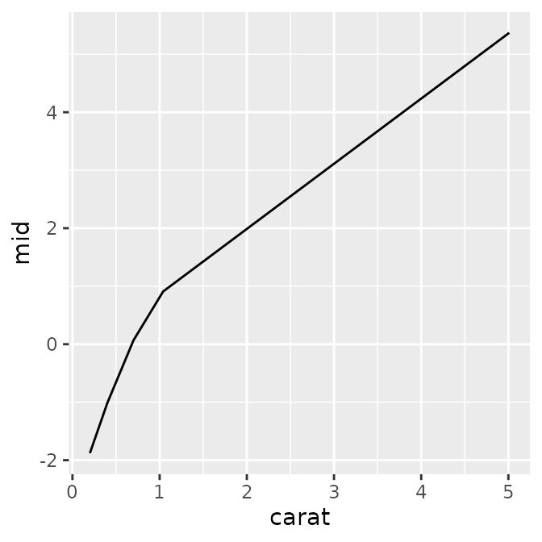
In addition to the default plot, you can also see the underlying data
and aesthetic mappings (aes) that ggmid()
generates internally.
#> $data
#> carat carat_min carat_max density mid
#> 1 0.2 0.20 0.30 0.09865591 -1.87881109
#> 2 0.4 0.30 0.55 0.29628476 -1.01371077
#> 3 0.7 0.55 0.87 0.21428417 0.06705239
#>
#> $mapping
#> Aesthetic mapping:
#> * `x` -> `.data[["carat"]]`
#> * `y` -> `.data[["mid"]]`By combining standard ggplot2 functions, you have a high degree of
freedom to customize the plot—such as changing line widths and colors,
or overlaying actual data points with geom_point().
p1 <- ggmid(mid, term = "carat", linewidth = 2, color = "dodgerblue4")
p2 <- ggmid(mid, term = "carat", color = .transparent) +
geom_point(aes(y = log(price) - mean(log(price))), data = diamonds_sample) +
geom_line(color = "firebrick1")
p3 <- ggmid(mid, term = "carat", type = "data", theme = "shap") +
geom_line(linewidth = 4, alpha = .2)
p1 + p2 + p3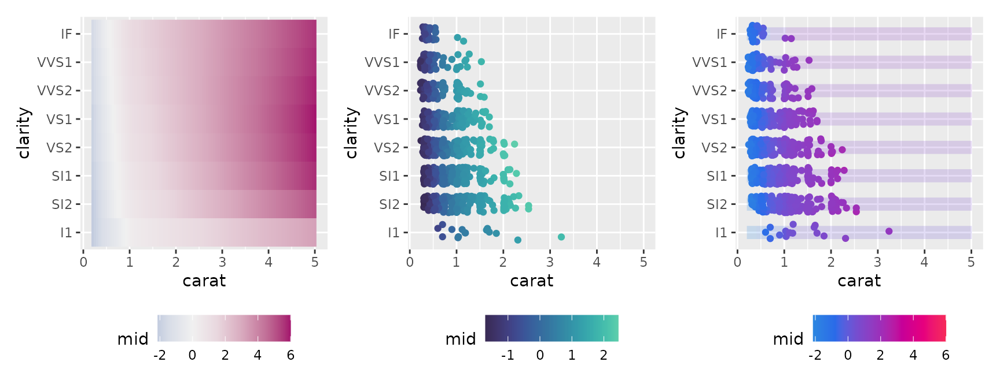
First-Order Effect (Factor Variable)
Categorical variables can be visualized in a similar manner. If the
lump argument was specified during model fitting, factor
levels are automatically grouped together. However, by setting
lumped = FALSE when plotting, you can expand and display
all levels.
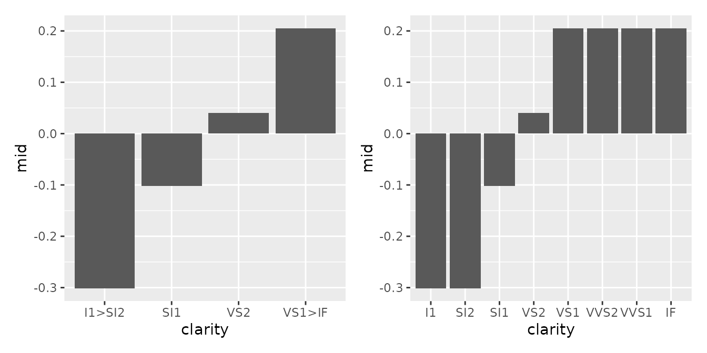
#> $data
#> clarity clarity_level density mid
#> 1 I1>SI2 1 0.1841861 -0.30105990
#> 2 SI1 2 0.2422136 -0.10227555
#> 3 VS2 3 0.2272525 0.04047436
#>
#> $mapping
#> Aesthetic mapping:
#> * `x` -> `.data[["clarity"]]`
#> * `y` -> `.data[["mid"]]`You can also overlay bar charts or use geom_jitter() to
simultaneously represent the data distribution for each category.
p1 <- ggmid(mid, term = "clarity", fill = "dodgerblue4", lumped = FALSE)
p2 <- ggmid(mid, term = "clarity", fill = .transparent, lumped = FALSE) +
geom_jitter(aes(y = log(price) - mean(log(price))), height = 0, data = diamonds_sample) +
geom_col(fill = NA, color = "firebrick1")
p3 <- ggmid(mid, term = "clarity", type = "data", theme = "shap", shape = "|") +
geom_line(aes(group = NA), linewidth = 4, alpha = .2)
p1 + p2 + p3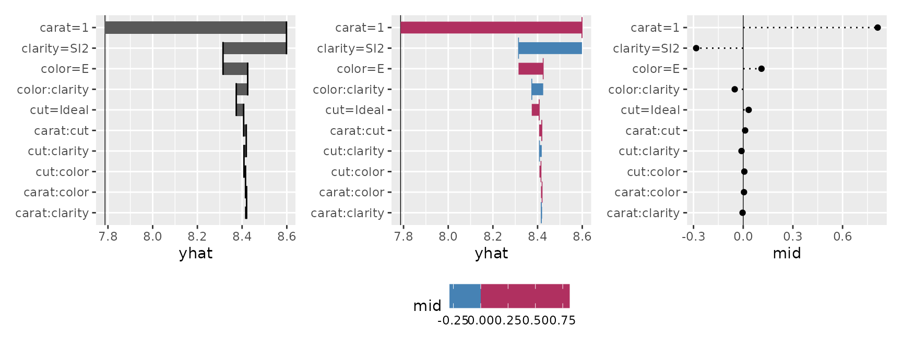
Second-Order Effect
This visualizes the interaction between two variables
(term = "var1:var2"). By specifying
main.effects = TRUE, you can view the overall effect,
including the main effects.
p1 <- ggmid(mid, term = "carat:clarity")
p2 <- ggmid(mid, term = "carat:clarity", main.effects = TRUE)
p1 + p2
#> $data
#> carat carat_min carat_max clarity clarity_level clarity_min clarity_max
#> 1 0.2 0.20 0.30 I1>SI2 1 0.5 1.5
#> 2 0.4 0.30 0.55 I1>SI2 1 0.5 1.5
#> 3 0.7 0.55 0.87 I1>SI2 1 0.5 1.5
#> mid
#> 1 0.06350548
#> 2 0.03083300
#> 3 0.08065825
#>
#> $mapping
#> Aesthetic mapping:
#> * `x` -> `.data[["carat"]]`
#> * `y` -> `.data[["clarity"]]`Additionally, by utilizing heatmap-oriented themes (e.g.,
theme = "Heat", "mako"), complex second-order
effects can be represented intuitively.
p1 <- ggmid(mid, term = "carat:clarity", type = "compound",
theme = "Heat", size = 1, shape = 1, lumped = FALSE)
p2 <- ggmid(mid, term = "carat:clarity", type = "data",
theme = "mako", main.effects = TRUE)
p3 <- ggmid(mid, term = "carat:clarity", type = "data",
theme = "shap", main.effects = TRUE) +
geom_line(aes(group = clarity, color = mid), linewidth = 4, alpha = .2)
p1 + p2 + p3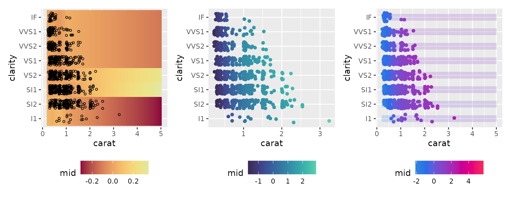
Feature Importance
Here, we visualize the importance of each variable calculated by the
mid.importance() function. ggmid() supports
various plot formats depending on your needs through the type
argument.
imp <- mid.importance(mid)
p1 <- ggmid(imp)
p2 <- ggmid(imp, type = "dotchart")
p1 + p2
#> $data
#> term importance order
#> 1 carat 0.9291310 1
#> 2 clarity 0.1638387 1
#> 3 color 0.1016388 1
#>
#> $mapping
#> Aesthetic mapping:
#> * `x` -> `.data[["importance"]]`
#> * `y` -> `.data[["term"]]`
p1 <- ggmid(imp, theme = "light")
p2 <- ggmid(imp, type = "dotchart", theme = "shap", size = 3)
p3 <- ggmid(imp, type = "dotchart", color = .transparent) +
geom_label(aes(x = importance, label = round(importance, 2)), size = 3) +
lims(x = c(-0.05, 1.05))
p1 + p2 + p3
The heatmap style provides a high-level overview of importance values in a heatmap format.
p1 <- ggmid(imp, type = "heatmap")
p1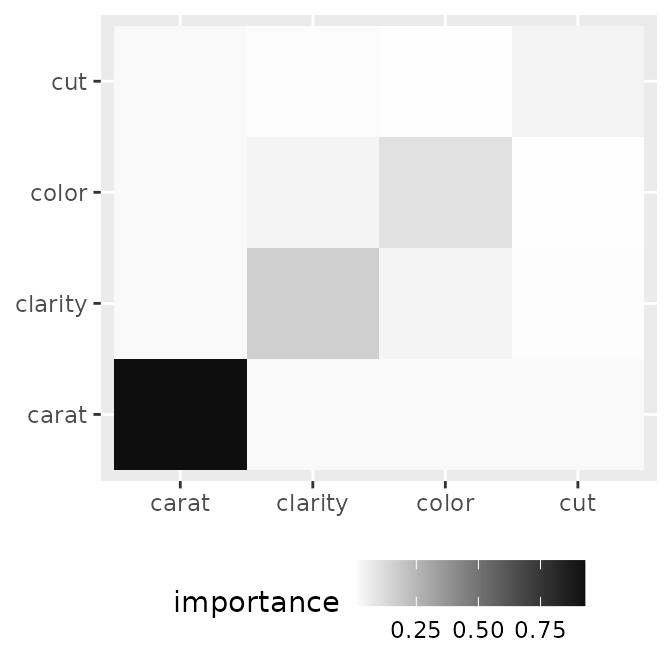
#> $data
#> x y importance
#> 1 carat carat 0.9291310
#> 2 clarity clarity 0.1638387
#> 3 color color 0.1016388
#>
#> $mapping
#> Aesthetic mapping:
#> * `x` -> `.data[["x"]]`
#> * `y` -> `.data[["y"]]`Adding text (geom_text()) to explicitly show the values
makes it even more reader-friendly.
p1 <- ggmid(imp, type = "heatmap", fill = "white", color = "black") +
geom_text(aes(label = round(importance, 2)))
p2 <- ggmid(imp, type = "heatmap", theme = "mako_r") +
geom_text(aes(label = round(importance, 2)), color = "white")
p3 <- ggmid(imp, type = "heatmap", fill = .transparent) +
geom_point(aes(size = importance), color = "steelblue")
p1 + p2 + p3
The boxplot style represents the distribution of importance in detail.
p1 <- ggmid(imp, type = "boxplot")
p1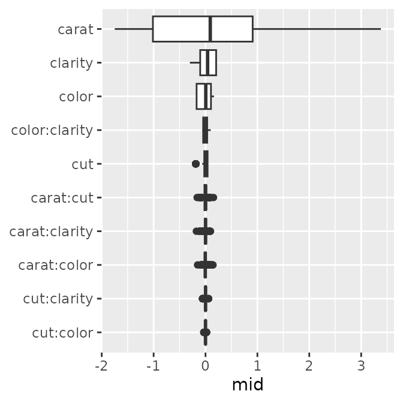
#> $data
#> mid term importance order
#> 1 0.8101023 carat 0.929131 1
#> 2 -1.4030059 carat 0.929131 1
#> 3 0.8844073 carat 0.929131 1
#>
#> $mapping
#> Aesthetic mapping:
#> * `x` -> `.data[["mid"]]`
#> * `y` -> `.data[["term"]]`
p1 <- ggmid(imp, type = "boxplot", theme = "mako")
p2 <- ggmid(imp, type = "boxplot", fill = .transparent, color = .transparent) +
geom_jitter(size = .5, width = 0) +
geom_boxplot(color = "firebrick1", fill = NA)
p3 <- ggmid(imp, type = "boxplot", fill = .transparent, color = .transparent) +
geom_violin(aes(fill = importance), scale = "width")
p1 + p2 + p3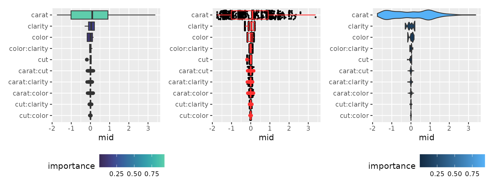
Prediction Breakdown
Using mid.breakdown(), we decompose and display the
contribution of each feature to the prediction for a specific
observation.
brk <- mid.breakdown(mid, row = 1L)
p1 <- ggmid(brk)
p1
#> $data
#> term mid order ymin ymax xmin xmax
#> 1 carat=1 0.8101023 1 9.7 10.3 7.786768 8.596871
#> 2 clarity=SI2 -0.3010599 1 8.7 9.3 8.596871 8.295811
#> 3 color=E 0.1052924 1 7.7 8.3 8.295811 8.401103
#>
#> $mapping
#> Aesthetic mapping:
#> * `x` -> `.data[["xmax"]]`
#> * `y` -> `.data[["term"]]`
p1 <- ggmid(brk, theme = "shap@qual", color = .transparent, width = .95) +
geom_text(aes(label = round(mid, 2), x = (xmin + xmax) / 2), size = 3)
p2 <- ggmid(brk, pattern = c("%t", "%t, %t"), width = .05)
p3 <- ggmid(brk, pattern = c("%t\n%v", "%t:%t\n%v:%v"), max.nterms = 7)
p1 + p2 + p3
You can flexibly adjust the layout using the pattern and type arguments, ranging from waterfall-like charts to bar plots and dot charts.
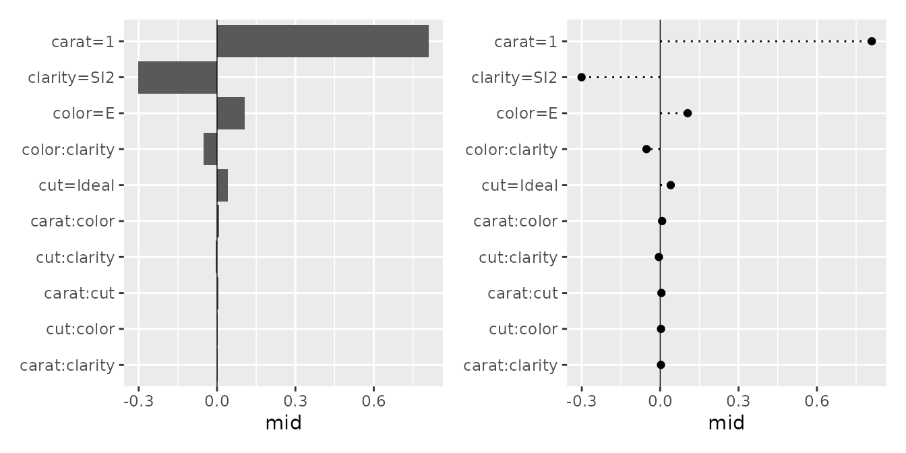
#> $data
#> term mid order
#> 1 carat=1 0.8101023 1
#> 2 clarity=SI2 -0.3010599 1
#> 3 color=E 0.1052924 1
#>
#> $mapping
#> Aesthetic mapping:
#> * `x` -> `.data[["mid"]]`
#> * `y` -> `.data[["term"]]`
p1 <- ggmid(brk, type = "barplot", theme = "light")
p2 <- ggmid(brk, type = "barplot", theme = "bicolor_r", vline = FALSE) +
aes(x = abs(mid)) +
geom_text(aes(label = round(mid, 2), x = abs(mid) + 0.03), size = 3)
p3 <- ggmid(brk, type = "dotchart", theme = "shap", size = 3)
p1 + p2 + p3
Conditional Expectation
Using mid.conditional(), we can observe how the
predicted values transition as a specific variable changes (similar to
ICE plots or PDPs). By specifying type = "centered", you
can align the baselines by showing the amount of change from a specific
reference point (reference), making it easier to compare the model’s
behavior across different groups.
con <- mid.conditional(mid, variable = "carat", data = diamonds_sample[1:100, ])
p1 <- ggmid(con)
p2 <- ggmid(con, type = "centered")
p1 + p2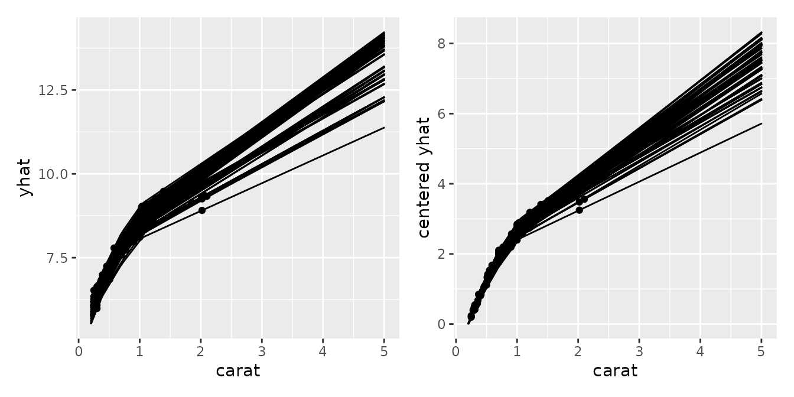
#> $data
#> .id yhat log.price. carat cut color clarity centered yhat
#> 1 1 8.402259 8.468003 1.00 Ideal E SI2 2.6519350
#> 2 2 6.624097 6.598509 0.31 Ideal D VS2 0.4666793
#> 3 3 9.007005 8.964056 1.03 Premium E VS1 2.6788562
#>
#> $mapping
#> Aesthetic mapping:
#> * `x` -> `.data[["carat"]]`
#> * `y` -> `.data[["centered yhat"]]`
p1 <- ggmid(con, points = FALSE, color = "dodgerblue4") +
geom_point()
p2 <- ggmid(con, type = "centered", var.color = cut,
shape = 1, size = 3, var.linetype = cut)
p3 <- ggmid(con, type = "centered", theme = "light",
var.color = "cut", reference = 50)
p1 + p2 + p3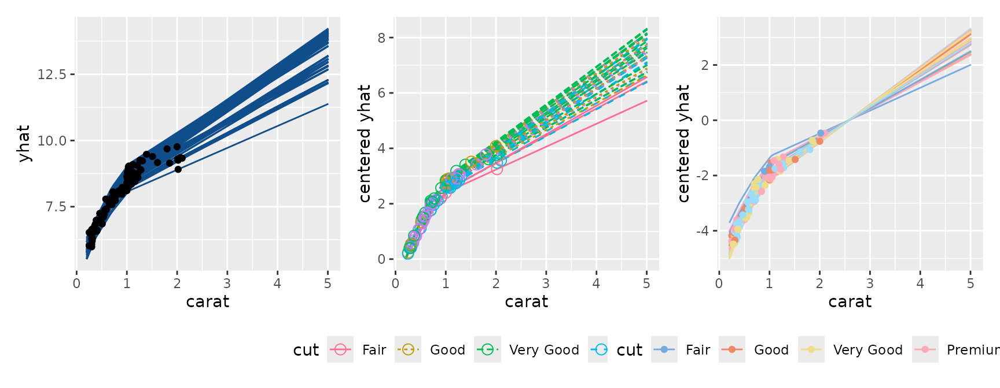
Collection of MID Models
Next, we will explore visualizations for a collection (set) of
multiple MID models. As an example, we build a Cox proportional hazards
model using the veteran dataset from the
survival package, and evaluate the transition of
effects over time as a collection of models.
# fit a survival mid model
sreg <- coxph(
Surv(time, status) ~ .,
data = veteran
)
mids <- interpret(
Surv(time, status) ~ .,
data = veteran,
model = sreg,
lambda = 1
)First-Order Effect (Numeric Variable)
p1 <- ggmid(mids, term = "karno")
p1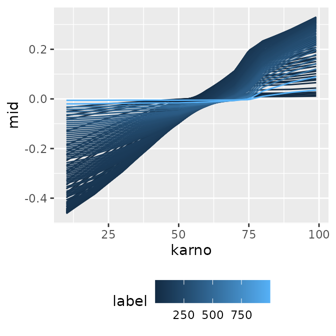
#> $data
#> karno label mid
#> 1 10.00000 1 -0.03451831
#> 2 10.90816 1 -0.03361561
#> 3 11.81633 1 -0.03271292
#>
#> $mapping
#> Aesthetic mapping:
#> * `x` -> `.data[["karno"]]`
#> * `y` -> `.data[["mid"]]`When you have multiple models with numeric labels, specifying
type = "series" allows you to easily create a
time-series-like transition graph with the model index (here, survival
time) on the x-axis.
p1 <- ggmid(mids, term = "karno", type = "series")
p1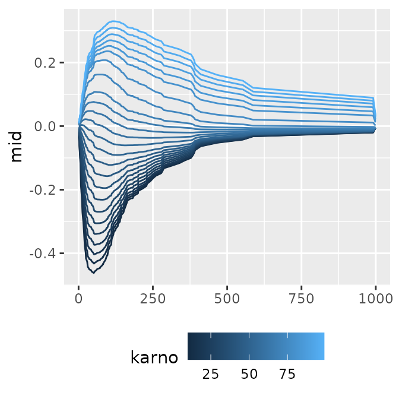
#> $data
#> karno label mid
#> 1 10.00000 1 -0.03451831
#> 2 13.70833 1 -0.03083229
#> 3 17.41667 1 -0.02714627
#>
#> $mapping
#> Aesthetic mapping:
#> * `x` -> `.data[["label"]]`
#> * `y` -> `.data[["mid"]]`You can also plot the baseline intercept transition by setting
intercept = TRUE, or adjust the format for publication
using theme functions, such as monochrome
(theme = "grayscale").
p1 <- ggmid(mids, term = "karno", intercept = TRUE)
p2 <- ggmid(mids, term = "karno", type = "series", intercept = TRUE,
theme = "mako")
p3 <- ggmid(mids, term = "karno", type = "series", intercept = TRUE,
theme = "grayscale") +
geom_line(
data = data.frame(
mid = mids$intercept,
label = as.numeric(labels(mids))
),
color = "firebrick1"
)
p1 + p2 + p3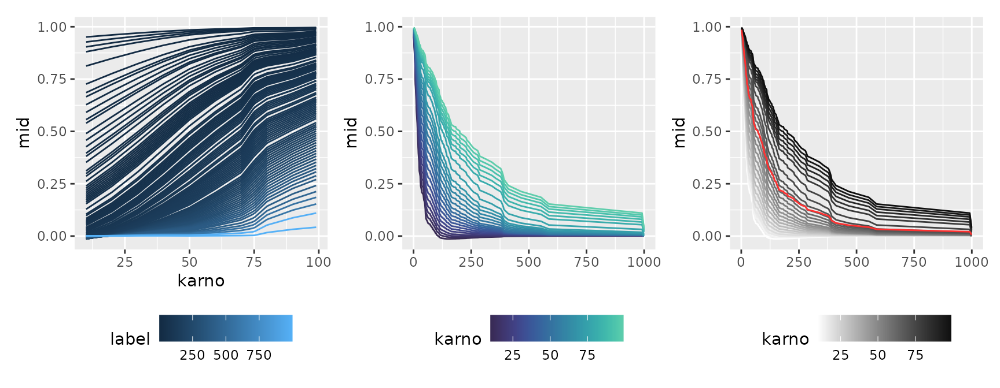
First-Order Effect (Factor Variable)
p1 <- ggmid(mids, "celltype")
p1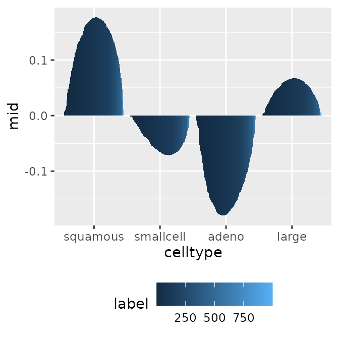
#> $data
#> celltype label mid
#> 1 squamous 1 0.007073419
#> 2 smallcell 1 -0.001229267
#> 3 adeno 1 -0.009254885
#>
#> $mapping
#> Aesthetic mapping:
#> * `x` -> `.data[["celltype"]]`
#> * `y` -> `.data[["mid"]]`
p1 <- ggmid(mids, "celltype", type = "series")
p1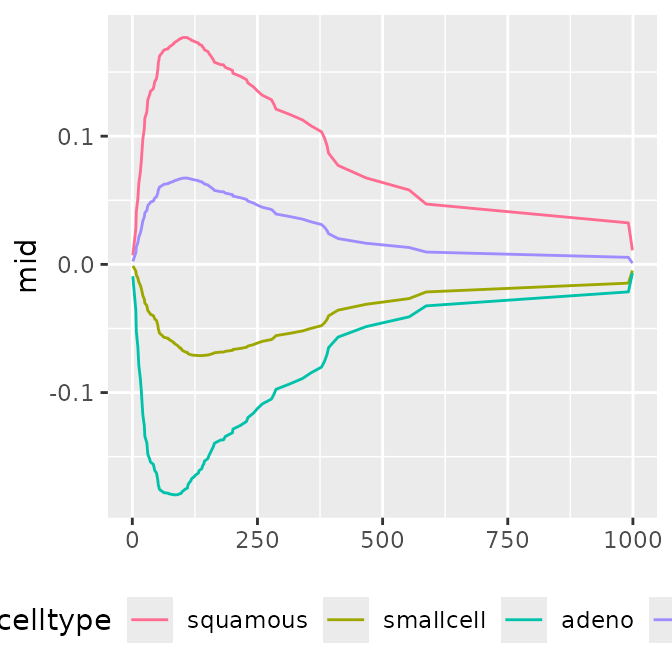
#> $data
#> celltype label mid
#> 1 squamous 1 0.007073419
#> 2 smallcell 1 -0.001229267
#> 3 adeno 1 -0.009254885
#>
#> $mapping
#> Aesthetic mapping:
#> * `x` -> `.data[["label"]]`
#> * `y` -> `.data[["mid"]]`
p1 <- ggmid(mids, term = "celltype", intercept = TRUE)
p2 <- ggmid(mids, term = "celltype", type = "series", intercept = TRUE,
theme = "mako")
p3 <- ggmid(mids, term = "celltype", type = "series", intercept = TRUE) +
geom_line(
data = data.frame(
mid = mids$intercept,
label = as.numeric(labels(mids))
),
linetype = "dotted"
)
p1 + p2 + p3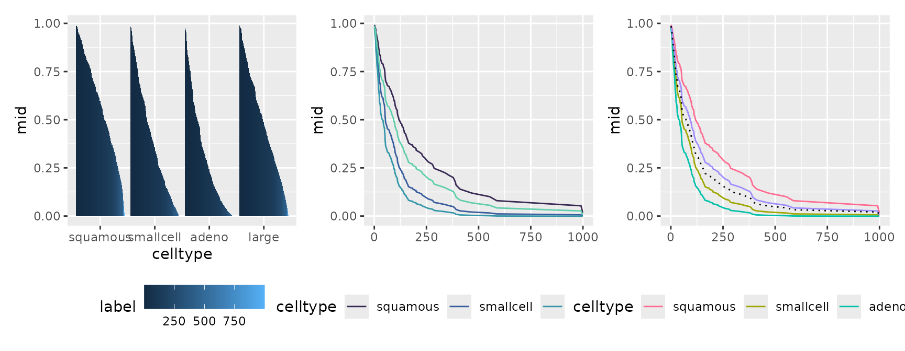
Feature Importance
The feature importance for the model collection can also be visualized along the progression of time (or model differences).
imps <- mid.importance(mids)
p1 <- ggmid(imps)
p1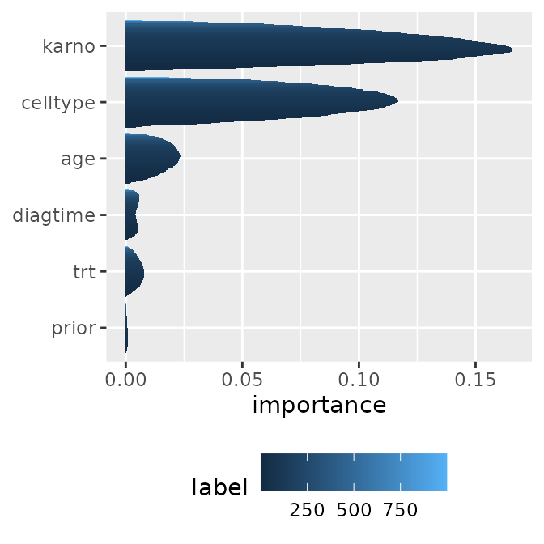
#> $data
#> term label importance
#> 1 age 1 0.001147048
#> 2 age 10 0.007087329
#> 3 age 100 0.023270137
#>
#> $mapping
#> Aesthetic mapping:
#> * `x` -> `.data[["importance"]]`
#> * `y` -> `.data[["term"]]`
p1 <- ggmid(imps, type = "series")
p1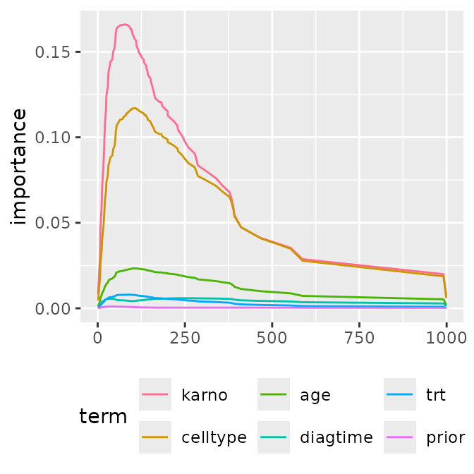
#> $data
#> term label importance
#> 1 age 1 0.001147048
#> 2 age 10 0.007087329
#> 3 age 100 0.023270137
#>
#> $mapping
#> Aesthetic mapping:
#> * `x` -> `.data[["label"]]`
#> * `y` -> `.data[["importance"]]`By using stacked area charts with geom_area() or
representing distributions with geom_boxplot() or
geom_jitter(), you can visually capture the dynamics of
which features become important at what specific timing.
p1 <- ggmid(imps, fill = .transparent) +
geom_boxplot()
p2 <- ggmid(imps, fill = .transparent) +
geom_jitter(aes(color = label), width = 0) +
scale_color_theme("mako")
p3 <- ggmid(imps, type = "series", color = .transparent) +
geom_area(aes(fill = term), position = "fill") +
scale_fill_theme("light")
p1 + p2 + p3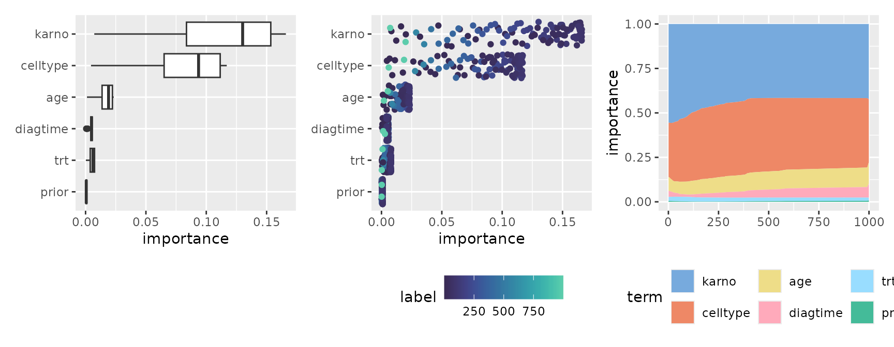
Prediction Breakdown
Similar to a single breakdown, this visualizes how the contribution of features for a specific observation changes across the entire collection. It is highly effective for tracking how the local impact of each variable fluctuates over time.
brks <- mid.breakdown(mids, row = 42)
p1 <- ggmid(brks)
p1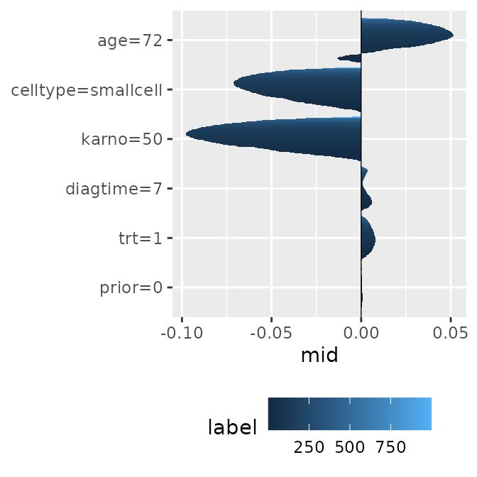
#> $data
#> term label mid
#> 1 age=72 1 -0.002957693
#> 2 age=72 10 -0.012751333
#> 3 age=72 100 0.048345388
#>
#> $mapping
#> Aesthetic mapping:
#> * `x` -> `.data[["mid"]]`
#> * `y` -> `.data[["term"]]`
p1 <- ggmid(brks, type = "series")
p1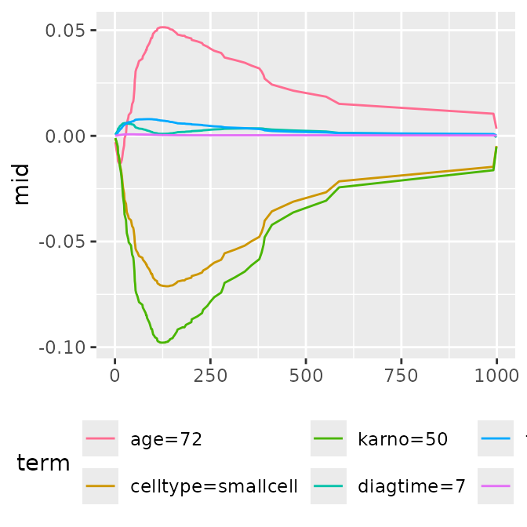
#> $data
#> term label mid
#> 1 age=72 1 -0.002957693
#> 2 age=72 10 -0.012751333
#> 3 age=72 100 0.048345388
#>
#> $mapping
#> Aesthetic mapping:
#> * `x` -> `.data[["label"]]`
#> * `y` -> `.data[["mid"]]`
p1 <- ggmid(brks, fill = .transparent) +
geom_boxplot()
p2 <- ggmid(brks, fill = .transparent) +
geom_jitter(aes(color = label), width = 0) +
scale_color_theme("mako")
p3 <- ggmid(brks, type = "series", color = .transparent) +
geom_area(aes(fill = term)) +
scale_fill_theme("light")
p1 + p2 + p3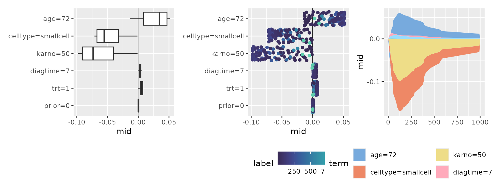
Conditional Expectation
Finally, let’s look at the transition of conditional expectations
across multiple models or time axes. By utilizing
facet_grid(~ .id), you can split the panels by time (the
model’s index) and compare side-by-side how the shape of the expectation
evolves.
cons <- mid.conditional(mids, variable = "karno",
max.nsamples = 3L, data = veteran[1:3, ])
p1 <- ggmid(cons)
p2 <- ggmid(cons, type = "centered")
p1 + p2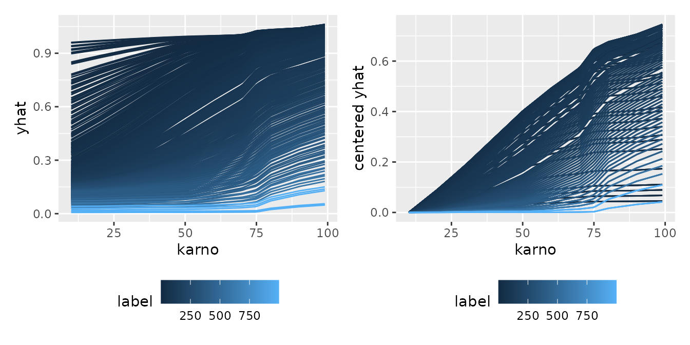
#> $data
#> .id yhat Surv.time..status. trt celltype karno diagtime age prior label
#> 1 1 0.9973367 72 1 squamous 60 7 69 0 1
#> 2 2 1.0018733 411 1 squamous 70 5 64 10 1
#> 3 3 0.9957201 228 1 squamous 60 3 38 0 1
#> centered yhat
#> 1 0.03776301
#> 2 0.04090414
#> 3 0.03776301
#>
#> $mapping
#> Aesthetic mapping:
#> * `x` -> `.data[["karno"]]`
#> * `y` -> `.data[["centered yhat"]]`
ggmid(cons, theme = "mako", type = "centered", reference = 50) +
facet_grid(~ .id)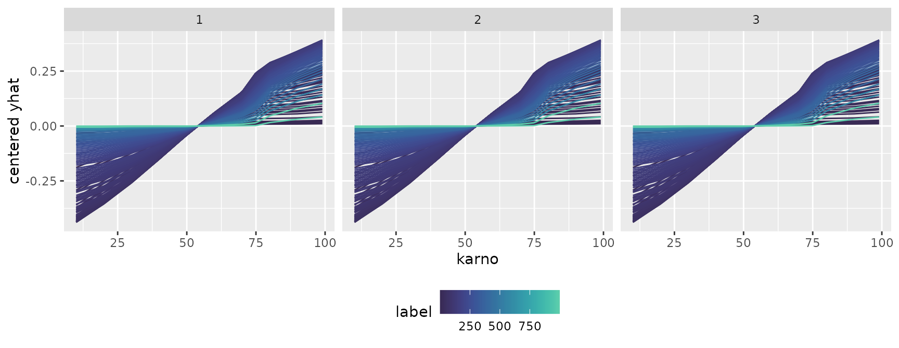
p1 <- ggmid(cons, type = "series")
p1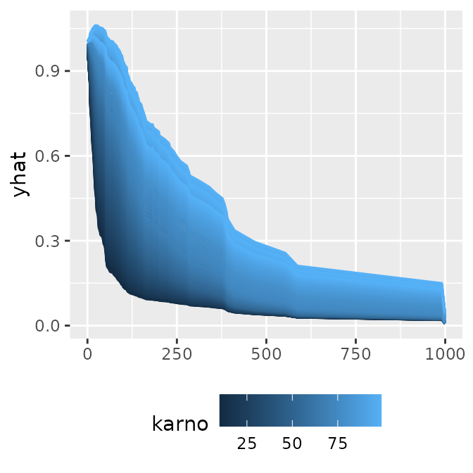
#> $data
#> .id yhat Surv.time..status. trt celltype karno diagtime age prior label
#> 1 1 0.9973367 72 1 squamous 60 7 69 0 1
#> 2 2 1.0018733 411 1 squamous 70 5 64 10 1
#> 3 3 0.9957201 228 1 squamous 60 3 38 0 1
#>
#> $mapping
#> Aesthetic mapping:
#> * `x` -> `.data[["label"]]`
#> * `y` -> `.data[["yhat"]]`
ggmid(cons, theme = "mako", type = "series") +
facet_grid(~ .id)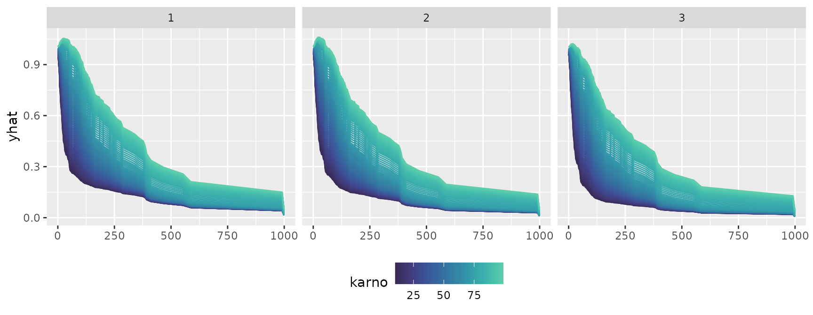